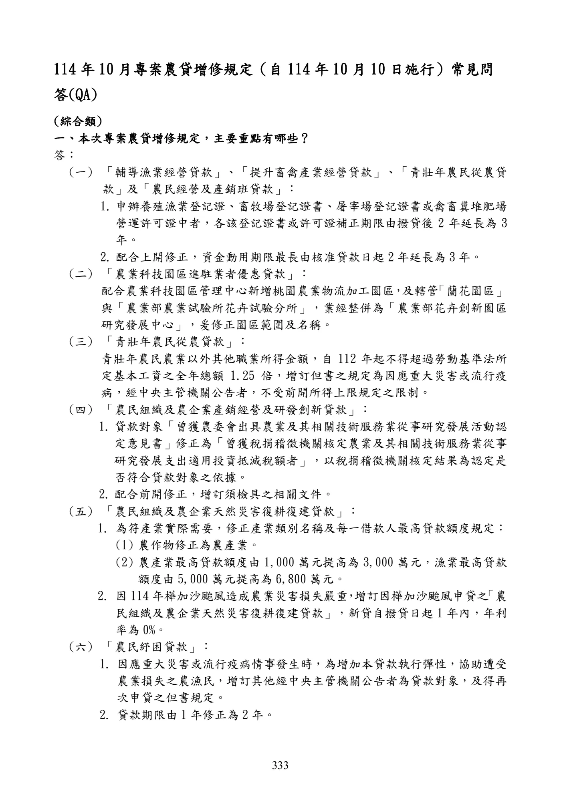

政策性農業專案貸款增修正規定常見問題
手冊頁：333 PDF頁：335／359
{kind=link}

展開查看PDF原始文字層
複雜表格欄列可能因文字層順序失真，請搭配原頁預覽查閱。
114 年10 月專案農貸增修規定（自 114 年10 月10 日施行）常見問 答(QA) (綜合類) 一、本次專案農貸增修規定，主要重點有哪些？ 答： (一) 「輔導漁業經營貸款」、「提升畜禽產業經營貸款」、「青壯年農民從農貸 款」及「農民經營及產銷班貸款」： 1. 申辦養殖漁業登記證、畜牧場登記證書、屠宰場登記證書或禽畜糞堆肥場 營運許可證中者，各該登記證書或許可證補正期限由撥貸後 2 年延長為 3 年。 2. 配合上開修正，資金動用期限最長由核准貸款日起 2 年延長為 3 年。 (二) 「農業科技園區進駐業者優惠貸款」： 配合農業科技園區管理中心新增桃園農業物流加工園區 ， 及轄管 「蘭花園區」 與「農業部農業試驗所花卉試驗分所」，業經整併為「農業部花卉創新園區 研究發展中心」，爰修正園區範圍及名稱。 (三) 「青壯年農民從農貸款」： 青壯年農民農業以外其他職業所得金額，自 112 年起不得超過勞動基準法所 定基本工資之全年總額 1.25 倍，增訂但書之規定為因應重大災害或流行疫 病，經中央主管機關公告者，不受前開所得上限規定之限制。 (四) 「農民組織及農企業產銷經營及研發創新貸款」： 1. 貸款對象「曾獲農委會出具農業及其相關技術服務業從事研究發展活動認 定意見書」修正為「曾獲稅捐稽徵機關核定農業及其相關技術服務業從事 研究發展支出適用投資抵減稅額者」，以稅捐稽徵機關核定結果為認定是 否符合貸款對象之依據。 2. 配合前開修正，增訂須檢具之相關文件。 (五) 「農民組織及農企業天然災害復耕復建貸款」： 1. 為符產業實際需要，修正產業類別名稱及每一借款人最高貸款額度規定： (1) 農作物修正為農產業。 (2) 農產業最高貸款額度由 1,000 萬元提高為 3,000 萬元，漁業最高貸款 額度由 5,000 萬元提高為 6,800 萬元。 2. 因 114 年樺加沙颱風造成農業災害損失嚴重，增訂因樺加沙颱風申貸之 「農 民組織及農企業天然災害復耕復建貸款」，新貸自撥貸日起 1 年內，年利 率為 0%。 (六) 「農民紓困貸款」： 1. 因應重大災害或流行疫病情事發生時，為增加本貸款執行彈性，協助遭受 農業損失之農漁民，增訂其他經中央主管機關公告者為貸款對象，及得再 次申貸之但書規定。 2. 貸款期限由 1 年修正為2 年。